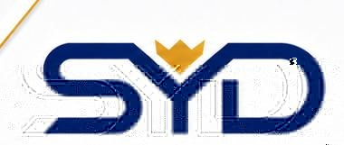
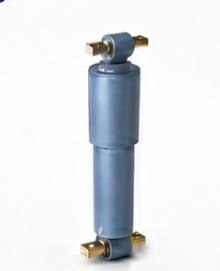

Bogie Components
For mainstream bogies including 25G, 25K and 25T coaches: frames, axle boxes, positioning devices and foundation brake equipment.

Siyide Traffic EquipmentRailway equipment · Key components · Technical servicesRailway equipment and components, maintenance, technical support, intelligent solutions and international trade from Shenyang, China.
Liaoning Siyide Traffic Equipment Co., Ltd. was established on April 28, 2017 and is registered in the Shenyang Area of the China (Liaoning) Pilot Free Trade Zone. Its operating address is in Tiexi District, Shenyang, within one of Northeast China’s core rail-transit equipment manufacturing areas.
The affiliated company, Shenyang Xinyishunda Rail Transit Equipment Co., Ltd., has worked in railway rolling stock and urban rail equipment parts sales, maintenance and after-sales service since April 2013. Together, the two companies form an integrated supply and technical-service chain for rail-transit equipment and components.
Integrity first · Customer first · Safety-driven · Technology-led
For mainstream bogies including 25G, 25K and 25T coaches: frames, axle boxes, positioning devices and foundation brake equipment.

Modular twin-tube dampers in light, medium and heavy specifications for primary/secondary vertical, secondary lateral and anti-hunting positions.

Power, control and heavy-duty connectors, including circular and rectangular railway-vehicle connectors.
Brake valves, cylinders, brake beam assemblies, safety hangers, brake shoes and brake pads.
Couplers, draft gear and related components for multiple locomotive and rolling-stock types.
For passenger and freight rolling stock, metro and light rail.
Lighting, power boxes, fan parts, hoses/piping, kitchen and sanitary equipment, and vacuum toilet systems.
Long-term cooperation with enterprises under CRRC and the Shenyang Institute of Automation, Chinese Academy of Sciences, plus sales authorizations from several mainstream domestic companies.
Bulk supply to China Railway Shenyang Group, Harbin Group and overhaul enterprises such as Shenyang Rail Vehicle Co., Ltd.
Products have been exported to multiple countries and regions in South Asia and Central Asia.
Strict implementation of railway industry standards and original-manufacturer technical requirements.
We aim to integrate resources, expand rail-transit markets, promote quality Chinese products and technologies overseas, and introduce advanced international technology and management experience for complementary strengths and mutual benefit.
For products, procurement, distribution, technical cooperation or international trade, contact us directly.
Production, overhaul, sales and technical services for transportation equipment and parts; technology development, production, installation, maintenance and sales of intelligent, automated, communication, electromechanical, safety-alarm and electronic equipment; development, transfer, consulting, services and sales of computer software/hardware and artificial-intelligence products; system integration; sales of metal materials, machinery, power equipment, instruments, hardware/electrical products, wires/cables and rubber products; self-operated and agency import/export of goods and technologies except where restricted or prohibited by the state.
Established: April 28, 2017 · Registered capital: RMB 5 million · Unified Social Credit Code: 91210100MA0U39Q431 · Operating term: long-term.